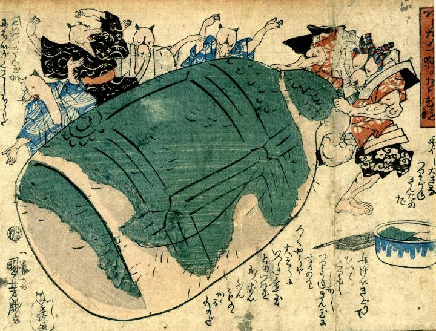

寺の鐘に見立てて彩色した陰嚢を、弁慶の格好をした狸が曳いている。弁慶曳鐘図を模したもの。
著作者：一勇斎国芳／出典：親書誌：U426_nichibunken_0253： [三井寺の弁慶] と[三福神]；ミイデラノベンケイトサンプクジン／日付：2011／資源識別子：U426_nichibunken_0253_0001_0000
Copyright (c)2010- International Research Center for Japanese Studies, Kyoto, Japan. All rights reserved.